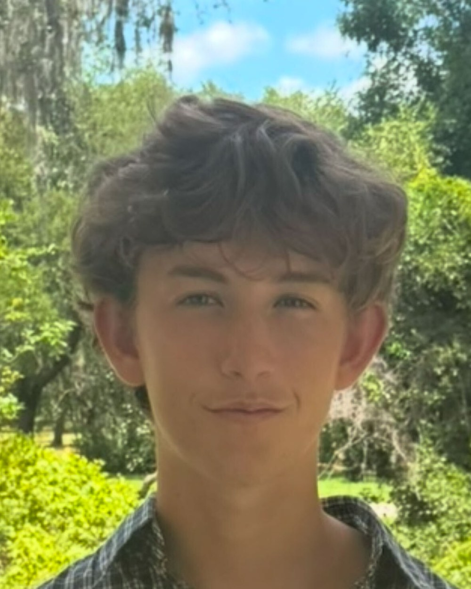
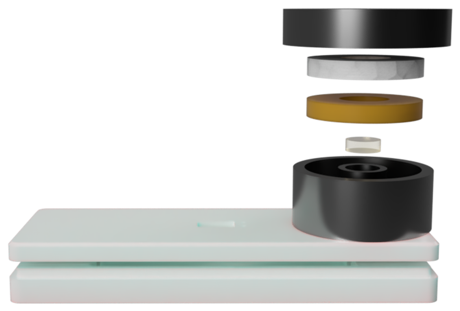
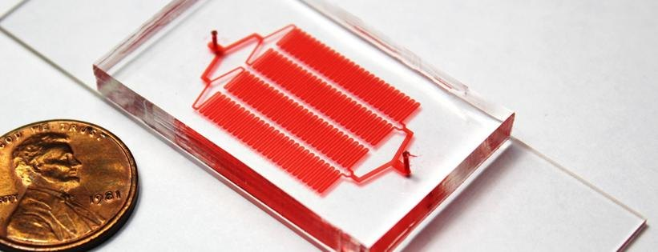
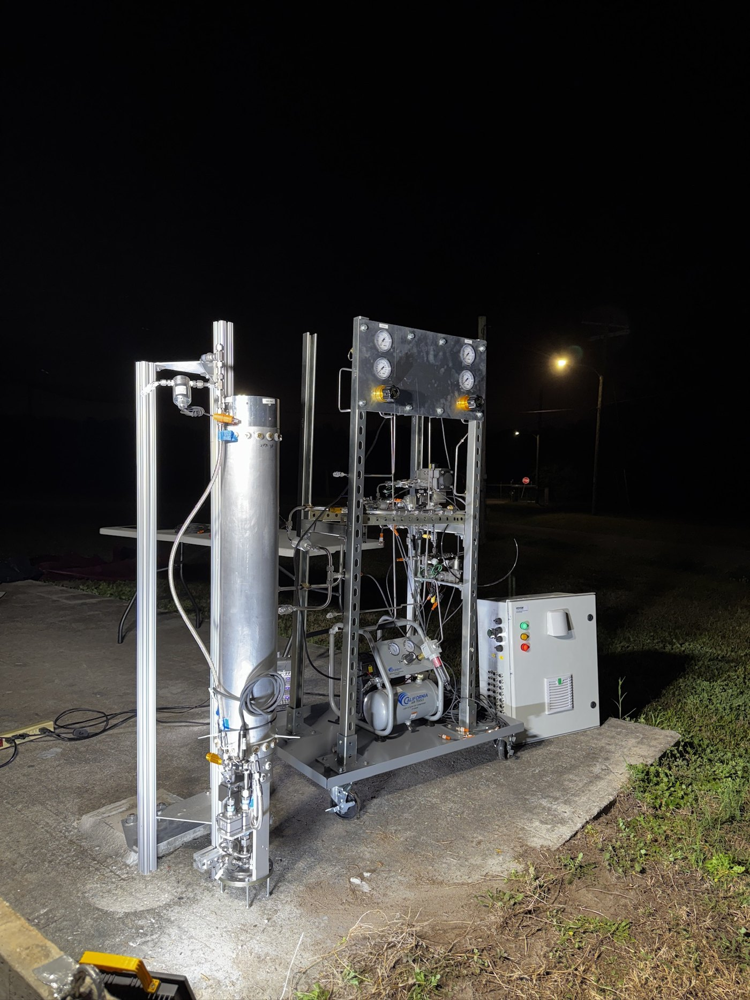

University of Florida · B.S. Mechanical Engineering · 2029
Noah Haeske
Most of what I build has to work without a power supply, without a lab, and without a second chance.

- Program
- B.S. Mechanical Engineering
- Institution
- University of Florida
- Expected
- May 2029 · GPA 4.00
- Research since
- August 2025
About
Taking the infrastructure out of the design.
I am a second-year mechanical engineering student at the University of Florida. My work sits between microfluidics and instrumentation — devices small enough that surface tension sets the rules, built to run outside of a laboratory.
At UF's Interdisciplinary Microsystems Group I fabricate and test microfluidic devices that isolate circulating tumor cells from patient blood, and I am developing a low-cost ball-valve platform for sequential reagent release. In the summer of 2026 I spent three months at Imperial College London on a point-of-care diagnostic cassette that holds a DNA amplification reaction at temperature using only a salt hydration exotherm and a phase-change buffer: no heater, no controller, no battery. Outside the wet lab, I lead payload systems for Florida Rocket Lab's 2026–27 vehicle and built the test stand that instruments its cold flows.
What connects them is the same constraint. Strip out the supporting infrastructure and something else has to carry the load, usually a material property or a geometry. I would rather solve a problem with a phase change than with a controller, and most of the work is figuring out whether that is actually possible.
Away from engineering I am a technical diver and a wilderness trip leader. I spent 90 days in the Alaskan backcountry with NOLS and a summer working at depth on coral reef surveys in Roatán. Both are the same lesson as the lab: plan for the failure mode you cannot walk back from.
Research interests
Where I want to work next.
Infrastructure-free diagnostics
Assays that run without power, cold chain, or trained operators — passive heating, passive timing, and readouts a non-technical user can trust.
Microfluidic cell separation
Size- and affinity-based capture of rare cells, and the modelling that predicts capture efficiency from channel geometry before a wafer is ever exposed.
Passive thermal & fluid control
Phase-change buffering, exothermic chemistry, and sacrificial materials used as timing elements rather than as packaging.
Instrumentation & data pipelines
Multi-channel DAQ, thermocouple and pressure logging, and the Python tooling that turns a messy test campaign into something you can actually make a decision from.
Selected work
Three things I have spent real time on.

Passive Thermal Control for an Infrastructure-Free Diagnostic Cassette
Held a DNA amplification reaction at 37–42 °C for ~11 minutes with zero electrical input, using a salt exotherm buffered by a phase-change ring.
Read the project →
Lateral Filter Array Microfluidics for Circulating Tumor Cell Isolation
COMSOL model relating channel geometry and flow rate to capture efficiency, validated against 200+ fabricated devices and clinical samples from UF Health Shands.
Read the project →
Cold Flow Test Platform & Payload Systems
A vertical integration and cold flow stand logging 12 channels of pressure, thermal, and vibration data, plus the Python pipeline that makes the data readable.
See projects →Contact
Get in touch.
- noah.haeske@ufl.edu
- Phone
- 407-705-9895
- Based in
- Gainesville & Orlando, Florida
- CV
- Download PDF